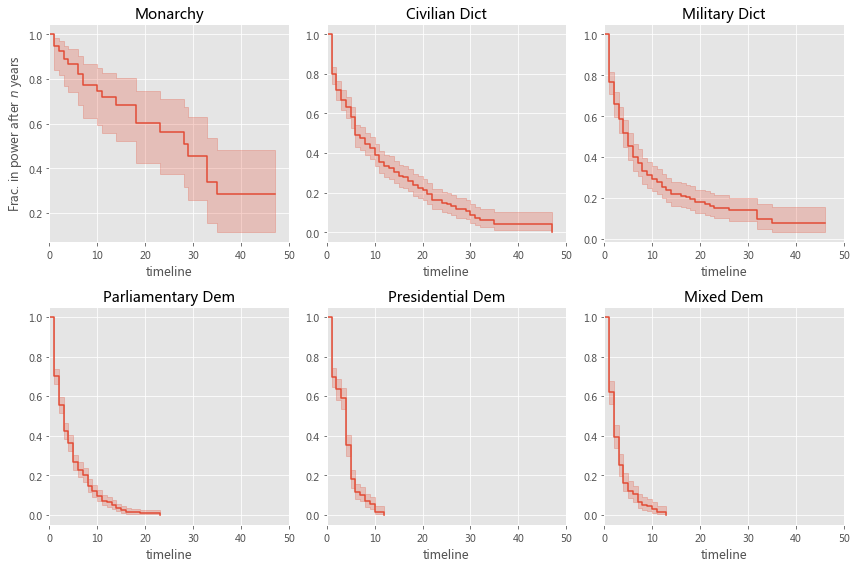
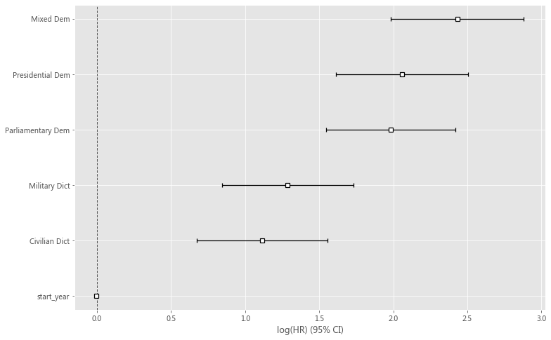

Survival Analysis with Python¶
lifelines is a complete survival analysis library, written in pure Python. What benefits does lifelines have?
easy installation
internal plotting methods
simple and intuitive API
handles right, left and interval censored data
contains the most popular parametric, semi-parametric and non-parametric models
https://lifelines.readthedocs.io/
pip install lifelines
Cheibub, José Antonio, Jennifer Gandhi, and James Raymond Vreeland. 2010. “Democracy and Dictatorship Revisited.” Public Choice, vol. 143, no. 2-1, pp. 67-101.
from lifelines.datasets import load_dd
data = load_dd()
data.head()
| ctryname | cowcode2 | politycode | un_region_name | un_continent_name | ehead | leaderspellreg | democracy | regime | start_year | duration | observed | |
|---|---|---|---|---|---|---|---|---|---|---|---|---|
| 0 | Afghanistan | 700 | 700.0 | Southern Asia | Asia | Mohammad Zahir Shah | Mohammad Zahir Shah.Afghanistan.1946.1952.Mona... | Non-democracy | Monarchy | 1946 | 7 | 1 |
| 1 | Afghanistan | 700 | 700.0 | Southern Asia | Asia | Sardar Mohammad Daoud | Sardar Mohammad Daoud.Afghanistan.1953.1962.Ci... | Non-democracy | Civilian Dict | 1953 | 10 | 1 |
| 2 | Afghanistan | 700 | 700.0 | Southern Asia | Asia | Mohammad Zahir Shah | Mohammad Zahir Shah.Afghanistan.1963.1972.Mona... | Non-democracy | Monarchy | 1963 | 10 | 1 |
| 3 | Afghanistan | 700 | 700.0 | Southern Asia | Asia | Sardar Mohammad Daoud | Sardar Mohammad Daoud.Afghanistan.1973.1977.Ci... | Non-democracy | Civilian Dict | 1973 | 5 | 0 |
| 4 | Afghanistan | 700 | 700.0 | Southern Asia | Asia | Nur Mohammad Taraki | Nur Mohammad Taraki.Afghanistan.1978.1978.Civi... | Non-democracy | Civilian Dict | 1978 | 1 | 0 |
data['regime'].unique()
array(['Monarchy', 'Civilian Dict', 'Military Dict', 'Parliamentary Dem',
'Presidential Dem', 'Mixed Dem'], dtype=object)
data['democracy'].unique()
array(['Non-democracy', 'Democracy'], dtype=object)
from lifelines import KaplanMeierFitter
kmf = KaplanMeierFitter()
T = data["duration"]
E = data["observed"]
kmf.fit(T, event_observed=E)
<lifelines.KaplanMeierFitter:"KM_estimate", fitted with 1808 total observations, 340 right-censored observations>
import numpy as np
import matplotlib.pyplot as plt
plt.style.use('ggplot')
plt.figure(figsize = (8, 8))
ax = plt.subplot(111)
dem = (data["democracy"] == "Democracy")
t = np.linspace(0, 50, 51)
kmf.fit(T[dem], event_observed=E[dem], timeline=t, label="Democratic Regimes")
ax = kmf.plot_survival_function(ax=ax)
kmf.fit(T[~dem], event_observed=E[~dem], timeline=t, label="Non-democratic Regimes")
ax = kmf.plot_survival_function(ax=ax)
plt.title("Lifespans of different global regimes");

regime_types = data['regime'].unique()
plt.figure(figsize = (12, 8))
for i, regime_type in enumerate(regime_types):
ax = plt.subplot(2, 3, i + 1)
ix = data['regime'] == regime_type
kmf.fit(T[ix], E[ix], label=regime_type)
kmf.plot_survival_function(ax=ax, legend=False)
plt.title(regime_type)
plt.xlim(0, 50)
if i==0:
plt.ylabel('Frac. in power after $n$ years')
plt.tight_layout()

data['un_continent_name'].unique()
array(['Asia', 'Europe', 'Africa', 'Americas', 'Oceania'], dtype=object)
import pandas as pd
df = pd.get_dummies(data['regime'])
df.head()
| Civilian Dict | Military Dict | Mixed Dem | Monarchy | Parliamentary Dem | Presidential Dem | |
|---|---|---|---|---|---|---|
| 0 | 0 | 0 | 0 | 1 | 0 | 0 |
| 1 | 1 | 0 | 0 | 0 | 0 | 0 |
| 2 | 0 | 0 | 0 | 1 | 0 | 0 |
| 3 | 1 | 0 | 0 | 0 | 0 | 0 |
| 4 | 1 | 0 | 0 | 0 | 0 | 0 |
data = pd.concat([data, df], axis=1)
data
| ctryname | cowcode2 | politycode | un_region_name | un_continent_name | ehead | leaderspellreg | democracy | regime | start_year | duration | observed | Civilian Dict | Military Dict | Mixed Dem | Monarchy | Parliamentary Dem | Presidential Dem | |
|---|---|---|---|---|---|---|---|---|---|---|---|---|---|---|---|---|---|---|
| 0 | Afghanistan | 700 | 700.0 | Southern Asia | Asia | Mohammad Zahir Shah | Mohammad Zahir Shah.Afghanistan.1946.1952.Mona... | Non-democracy | Monarchy | 1946 | 7 | 1 | 0 | 0 | 0 | 1 | 0 | 0 |
| 1 | Afghanistan | 700 | 700.0 | Southern Asia | Asia | Sardar Mohammad Daoud | Sardar Mohammad Daoud.Afghanistan.1953.1962.Ci... | Non-democracy | Civilian Dict | 1953 | 10 | 1 | 1 | 0 | 0 | 0 | 0 | 0 |
| 2 | Afghanistan | 700 | 700.0 | Southern Asia | Asia | Mohammad Zahir Shah | Mohammad Zahir Shah.Afghanistan.1963.1972.Mona... | Non-democracy | Monarchy | 1963 | 10 | 1 | 0 | 0 | 0 | 1 | 0 | 0 |
| 3 | Afghanistan | 700 | 700.0 | Southern Asia | Asia | Sardar Mohammad Daoud | Sardar Mohammad Daoud.Afghanistan.1973.1977.Ci... | Non-democracy | Civilian Dict | 1973 | 5 | 0 | 1 | 0 | 0 | 0 | 0 | 0 |
| 4 | Afghanistan | 700 | 700.0 | Southern Asia | Asia | Nur Mohammad Taraki | Nur Mohammad Taraki.Afghanistan.1978.1978.Civi... | Non-democracy | Civilian Dict | 1978 | 1 | 0 | 1 | 0 | 0 | 0 | 0 | 0 |
| ... | ... | ... | ... | ... | ... | ... | ... | ... | ... | ... | ... | ... | ... | ... | ... | ... | ... | ... |
| 1803 | Zambia | 551 | 551.0 | Eastern Africa | Africa | Levy Patrick Mwanawasa | Levy Patrick Mwanawasa.Zambia.2002.2007.Civili... | Non-democracy | Civilian Dict | 2002 | 6 | 1 | 1 | 0 | 0 | 0 | 0 | 0 |
| 1804 | Zambia | 551 | 551.0 | Eastern Africa | Africa | Rupiah Bwezani Banda | Rupiah Bwezani Banda.Zambia.2008.2008.Civilian... | Non-democracy | Civilian Dict | 2008 | 1 | 0 | 1 | 0 | 0 | 0 | 0 | 0 |
| 1805 | Zimbabwe | 552 | 552.0 | Eastern Africa | Africa | Ian Smith | Ian Smith.Zimbabwe.1965.1978.Civilian Dict | Non-democracy | Civilian Dict | 1965 | 14 | 1 | 1 | 0 | 0 | 0 | 0 | 0 |
| 1806 | Zimbabwe | 552 | 552.0 | Eastern Africa | Africa | Abel Muzorewa | Abel Muzorewa.Zimbabwe.1979.1979.Civilian Dict | Non-democracy | Civilian Dict | 1979 | 1 | 1 | 1 | 0 | 0 | 0 | 0 | 0 |
| 1807 | Zimbabwe | 552 | 552.0 | Eastern Africa | Africa | Robert Mugabe | Robert Mugabe.Zimbabwe.1980.2008.Civilian Dict | Non-democracy | Civilian Dict | 1980 | 29 | 0 | 1 | 0 | 0 | 0 | 0 | 0 |
1808 rows × 18 columns
data.columns
Index(['ctryname', 'cowcode2', 'politycode', 'un_region_name',
'un_continent_name', 'ehead', 'leaderspellreg', 'democracy', 'regime',
'start_year', 'duration', 'observed', 'Civilian Dict', 'Military Dict',
'Mixed Dem', 'Monarchy', 'Parliamentary Dem', 'Presidential Dem'],
dtype='object')
data['Democracy'] = [1 if i == 'Democracy' else 0 for i in data['democracy']]
from lifelines import CoxPHFitter
cph0 = CoxPHFitter()
dat = data[['duration', 'observed', 'start_year','Democracy']]
cph0.fit(dat, duration_col='duration', event_col='observed')
cph0.print_summary()
| model | lifelines.CoxPHFitter |
|---|---|
| duration col | 'duration' |
| event col | 'observed' |
| baseline estimation | breslow |
| number of observations | 1808 |
| number of events observed | 1468 |
| partial log-likelihood | -9613.93 |
| time fit was run | 2021-06-11 03:48:19 UTC |
| coef | exp(coef) | se(coef) | coef lower 95% | coef upper 95% | exp(coef) lower 95% | exp(coef) upper 95% | z | p | -log2(p) | |
|---|---|---|---|---|---|---|---|---|---|---|
| start_year | -0.00 | 1.00 | 0.00 | -0.00 | 0.00 | 1.00 | 1.00 | -0.82 | 0.41 | 1.28 |
| Democracy | 0.97 | 2.65 | 0.06 | 0.85 | 1.10 | 2.34 | 3.00 | 15.27 | <0.005 | 172.57 |
| Concordance | 0.60 |
|---|---|
| Partial AIC | 19231.86 |
| log-likelihood ratio test | 264.70 on 2 df |
| -log2(p) of ll-ratio test | 190.94 |
dat = data[['duration', 'observed', 'start_year',
'Civilian Dict', 'Military Dict', #'Monarchy',
'Mixed Dem', 'Parliamentary Dem', 'Presidential Dem'
]]
from lifelines import CoxPHFitter
cph = CoxPHFitter()
cph.fit(dat, duration_col='duration', event_col='observed')
cph.print_summary()
| model | lifelines.CoxPHFitter |
|---|---|
| duration col | 'duration' |
| event col | 'observed' |
| baseline estimation | breslow |
| number of observations | 1808 |
| number of events observed | 1468 |
| partial log-likelihood | -9576.63 |
| time fit was run | 2021-06-11 03:44:58 UTC |
| coef | exp(coef) | se(coef) | coef lower 95% | coef upper 95% | exp(coef) lower 95% | exp(coef) upper 95% | z | p | -log2(p) | |
|---|---|---|---|---|---|---|---|---|---|---|
| start_year | -0.00 | 1.00 | 0.00 | -0.01 | 0.00 | 0.99 | 1.00 | -1.81 | 0.07 | 3.83 |
| Civilian Dict | 1.12 | 3.05 | 0.22 | 0.68 | 1.56 | 1.97 | 4.74 | 4.97 | <0.005 | 20.52 |
| Military Dict | 1.29 | 3.63 | 0.23 | 0.84 | 1.73 | 2.32 | 5.66 | 5.67 | <0.005 | 26.05 |
| Mixed Dem | 2.43 | 11.38 | 0.23 | 1.98 | 2.88 | 7.26 | 17.85 | 10.60 | <0.005 | 84.73 |
| Parliamentary Dem | 1.98 | 7.26 | 0.22 | 1.55 | 2.42 | 4.69 | 11.23 | 8.91 | <0.005 | 60.73 |
| Presidential Dem | 2.06 | 7.84 | 0.23 | 1.61 | 2.50 | 5.02 | 12.24 | 9.06 | <0.005 | 62.68 |
| Concordance | 0.63 |
|---|---|
| Partial AIC | 19165.27 |
| log-likelihood ratio test | 339.29 on 6 df |
| -log2(p) of ll-ratio test | 230.92 |
plt.figure(figsize = (12, 8))
cph.plot()
plt.show()

cph.plot_partial_effects_on_outcome(covariates='Presidential Dem', values=[0, 1], cmap='coolwarm');